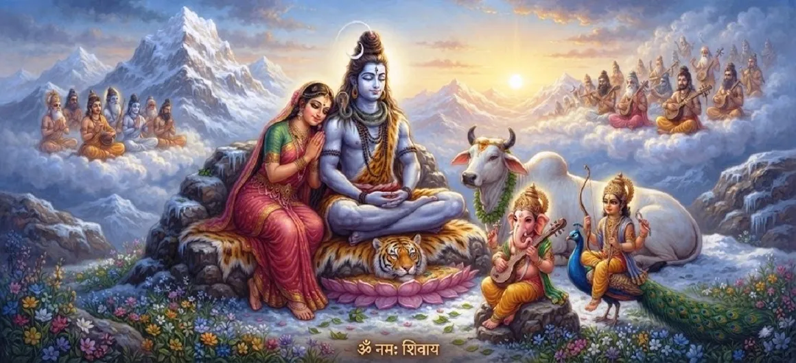

The Liberation of Devotees Through Shiva Worship
The forty-first chapter of the Kotirudra Samhita explains how dedicated worship, unwavering devotion, and constant remembrance of Lord Shiva cut through worldly ties and grant ultimate liberation (moksha).
This chapter serves as a profound affirmation of how grace frees the sincere soul from the endless wheel of samsara.
Chapter 41 Highlights
Spiritual Freedom
Breaking free from the chains of material existence.
Power of Worship
How sincere devotion dissolves karmic bonds.
Conquering Ego
Surrendering the lower self to the Supreme.
Divine Grace
Mahadeva's direct intervention in lifting His bhaktas.
Purification of Mind
Cleansing thoughts through constant remembrance of Shiva.
Ultimate Moksha
Merging individual consciousness into the infinite.
Core Topics in This Chapter
Breaking the Bonds of Samsara
This section discusses how human souls remain trapped in worldly illusions until they direct their affection and worship toward Lord Shiva, the master of liberation.
Shiva worship acts as the direct sword that cuts through these illusions.
The Transformative Power of Worship
Every ritual, prayer, and offering performed with a sincere heart elevates the devotee's consciousness, shifting focus from temporary pleasures to eternal spiritual truths.
The act of worship changes the worshipper from within.
Surrender and Ego Dissolution
True liberation cannot happen while ego persists. Through dedicated worship, the devotee learns to surrender personal identity to the Supreme Consciousness.
This surrender melts away the barriers separating the soul from Shiva.
The Supreme Role of Shiva's Grace
While human effort is necessary, liberation is ultimately granted through the compassionate grace of Mahadeva, who eagerly lifts His devotees out of darkness.
His grace is the final catalyst for spiritual freedom.
Attaining Final Liberation (Moksha)
The chapter concludes that those who remain devoted to Shiva throughout life achieve complete emancipation, resting eternally in supreme peace and bliss.
They never return to the sorrowful cycle of worldly rebirth.
Transition to Chapter 42
Having detailed the process of liberation through worship, the text flows naturally into Chapter 42, which explores the eternal rewards of continuous Shiva Bhakti.
Readers are invited to continue to Chapter 42.
Key Teachings of Chapter 41
Freedom from Illusion
Shattering the illusions of material life.
Transformative Puja
Elevating consciousness through ritual worship.
Surrendering Ego
Melting personal pride into divine surrender.
Compassionate Grace
Mahadeva's hand guiding seekers to freedom.
Mental Purification
Cleansing the mind via constant devotion.
Eternal Bliss
Achieving permanent rest in liberation.
Spiritual Reflection
Chapter 41 reminds us that the ultimate goal of all spiritual practice is freedom from the bindings of ego and illusion. Lord Shiva, worshipped with sincerity and love, acts as the supreme liberator who cuts away our karmic fetters and guides us across the ocean of samsara. When we dedicate our worship and surrender our ego to Mahadeva, we unlock the door to permanent peace and eternal bliss. May the teachings of this chapter inspire us to deepen our daily worship, transforming every prayer into a step toward supreme liberation.
Living the Message of Chapter 41
Approach your daily prayers not as a mere routine, but as a conscious effort to loosen worldly attachments and connect with the Divine.
Practice humility by recognizing that all actions and achievements belong to Mahadeva, thereby dissolving your ego.
Trust in Shiva's compassionate grace to guide you safely through the challenges of life toward ultimate freedom.
Key Spiritual Concepts
Freedom from the cycle of birth, death, and rebirth.
The conditioned, illusory world of material existence.
Surrendering personal pride to the Supreme.
Worship that actively changes and elevates the soul.
The liberating favor bestowed by Lord Shiva.
The infinite, all-pervading reality of Shiva.
Chapter Summary
Kotirudra Samhita Chapter 41 explains the mechanics of spiritual liberation through Shiva worship. It details how sincere devotion breaks the illusions of samsara, dissolves the ego, and draws down the grace of Mahadeva to grant ultimate moksha, setting the stage for Chapter 42 on the eternal rewards of Shiva Bhakti.
Frequently Asked Questions
1. What is the primary theme of Kotirudra Samhita Chapter 41?
Chapter 41 details how dedicated worship, remembrance, and devotion to Lord Shiva liberate souls from the cycle of birth and death (samsara).
2. How does this chapter follow the previous one?
After exploring the supreme merit of observing Maha Shivaratri in Chapter 40, this chapter focuses broadly on how continuous Shiva worship accomplishes ultimate liberation.
3. How does Shiva worship break worldly bonds?
Shiva worship purifies the mind, cuts through ego and attachment, and aligns individual consciousness directly with the Supreme Reality.
4. What is the next chapter after this one?
The next chapter is Chapter 42, 'The Eternal Rewards of Shiva Bhakti'.
“Through sincere worship and total surrender to Lord Shiva, the seeker breaks the bonds of illusion and attains ultimate liberation.”
Continue Through Kotirudra Samhita
Chapter 41 explores the liberation of devotees through Shiva worship. Continue to Chapter 42, The Eternal Rewards of Shiva Bhakti.